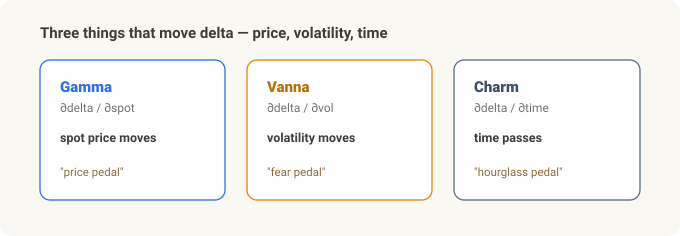
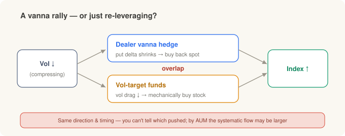
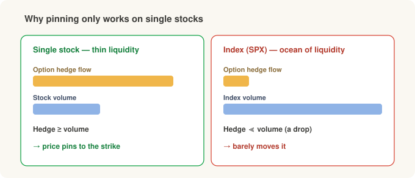
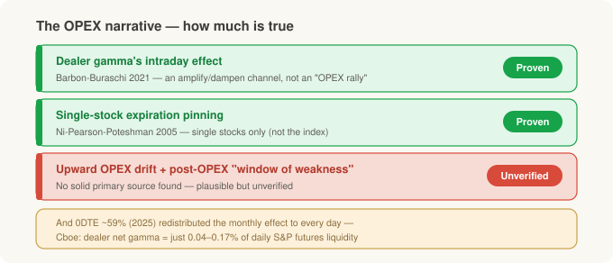
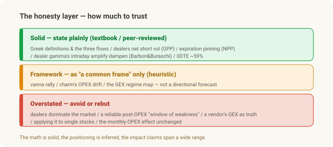

Beyond Gamma — The Vanna Rally, Pinning, and the Dealer's Real Hands¶
Options-structure series. Compute GEX Yourself covered gamma; 0DTE Gamma Patterns covered intraday change. This one goes beyond gamma — the dealer flows driven by volatility and time, Vanna and Charm — and how far you can actually trust them.
Recall the gamma story. A dealer (market maker) doesn't bet on direction — it offsets (hedges) the risk of the options customers hand over, using the underlying. But that hedge doesn't sit still. Three things keep moving the dealer's hands:
- Gamma — delta changes when spot moves (the previous two posts)
- Vanna — delta changes when volatility moves
- Charm — delta changes when time passes
Even with price frozen, a falling volatility or simply a day going by makes a dealer trade. This piece explains what vanna and charm are, when they matter, and — honestly — what's actually true about the gamma, vanna, and charm "events" the industry periodically turns into headlines. (Spoiler: the math is solid, the positioning is mostly inferred, and the market-impact claims are often overstated.)
In 30 seconds¶
- Three axes move dealer hedges: gamma (price) · vanna (vol) · charm (time).
- Vanna = delta changes when vol changes. Charm = delta changes as time passes. — That much is textbook.
- The "vanna rally" — the idea that falling vol makes dealers buy and push the index up — is the industry's standard framework. It only holds if dealers are net short vol (positioned to profit when markets stay calm and lose when they swing hard), and that premise is confirmed in the data. The catch is the next step: no one has actually proven the causal link (moving together isn't the same as causing).
- Expiration pinning (a stock getting magnetized to a strike at expiration) is peer-reviewed — but for single stocks. A directional index "drift up into OPEX" (OPEX = options expiration) is a much weaker claim.
- The decisive rebuttal: Cboe's own study finds dealer net gamma is 0.04–0.17% of daily S&P futures liquidity. "Dealer hedging dominates the tape" is overstated. And 0DTE (zero-days-to-expiry — options expiring the same session, traded heavily on expiry day) is now ~59% of SPX option volume (2025), which has redistributed the classic monthly-OPEX effect.
- One line to keep. Trust the Greek math. But whether a dealer is long or short right now is mostly a guess, and "that's why the market moved this much" is usually inflated. The bottom table sorts the solid from the hot air.
Three flows — price, vol, time¶
Delta hedging means "keep this position's delta at zero." The problem: delta keeps moving for three reasons. In words, delta's motion is the sum of three parts — the part from price (gamma) + the part from vol (vanna) + the part from time (charm).
| Flow | What moves delta | Greek | When it dominates |
|---|---|---|---|
| Gamma hedging | spot price moves | Gamma (∂δ/∂S) | continuous·intraday; sharpest near ATM & expiry |
| Vanna hedging | implied vol moves | Vanna (∂δ/∂σ) | vol regime shifts — hours to days |
| Charm hedging | time passes | Charm (∂δ/∂t) | into expiry (OPEX Friday · EOD) |
Gamma was the prior posts; here it's the other two. (This three-way split is itself textbook-correct.)

Vanna — volatility jolts delta¶
Vanna is "how much delta changes when implied vol moves by 1." Flip it and it's also "how much vega (vol sensitivity) changes when spot moves by 1." The name is Vega + delta.
An analogy: if gamma is the "price pedal," vanna is the "fear pedal." The delta on a price pedal you never touched shifts on its own as the market's fear (volatility) rises or falls — so the dealer must re-hedge.
What the "vanna rally" story actually is¶
Direction depends on what position the dealer holds. And here's a fact shown with actual holdings data: institutions (customers) are net buyers of index options, especially OTM puts → so dealers are net short vol (Gârleanu·Pedersen·Poteshman, 2009 — the first paper to prove with holdings data the "Wall Street is short index vol" conventional wisdom).
Under that position: when vol falls, put deltas shrink, so the dealer buys back the underlying it had sold as a hedge → upward pressure, in theory. This is the so-called vanna rally. On a vol spike, the reverse.
Where to be honest
Dealers being short vol is confirmed in the data, but no study proves the causal chain "vol falls → dealers buy → the index rises." That same picture — vol compressing while the index grinds higher — shows up under plain risk-on too. And when vol falls, some funds (risk parity, vol-control) mechanically buy stock because they're now allowed more risk — and their buying overlaps the dealer vanna flow in direction and timing, with more money behind it, if anything. So when the index rises, telling apart "the dealers pushed it" from "those funds pushed it" is essentially impossible. Read vendors (SpotGamma etc.) who sell this as a law as marketing, not evidence. It's a framework worth knowing — not something to trust like clockwork.

Charm — delta bleeds with time alone¶
Charm is "how much delta changes as one day passes" (∂Delta/∂time, "delta decay"). As expiry nears, OTM deltas decay toward 0 and ITM toward ±1 — with nothing happening at all, the calendar turning is enough to move delta.
An analogy: charm is the "hourglass pedal." Price and fear unchanged, yet the falling sand alone unwinds a little of the hedge. So it stands out near expiry (especially Friday / monthly OPEX).
Again, split evidence from story:
- ✅ Pinning is real. Optionable single-stock closing prices cluster at strikes on expiration days, partly due to MM delta-hedging (Ni·Pearson·Poteshman, 2005; ≥16.5 bp average effect, single stocks pin ~8.2% of expiration days vs <6% on adjacent days). Strictly, pinning is a gamma effect, not charm — near expiry, at-the-money gamma spikes and long-gamma dealers' hedging mean-reverts price to the strike; it lives in this section only because it's an expiration-day phenomenon.
- 🟡 But that's "single stocks pinning to nearby strikes," not a broad index drift up into OPEX — the latter is a much weaker heuristic. Why only single stocks? Pinning needs the option-hedging flow to be large relative to the name's own trading volume to anchor the price — doable in a thin single stock, but a drop in the ocean against an index's liquidity.

The OPEX thesis — fact, or story?¶
"Before monthly OPEX, vanna + charm hedging pushes prices up, and after OPEX a window of weakness arrives" — this feedback-loop framing was popularized by JPMorgan research (Marko Kolanovic). Let's split exactly what's empirical from what's a story.
- ✅ Dealer gamma affects intraday dynamics — supported (Barbon·Buraschi, Gamma Fragility, 2021): dealer gamma imbalance predicts intraday momentum (short gamma) vs. reversal (long gamma), stronger when the underlying is less liquid. Note: this is gamma's vol-amplify/dampen channel, NOT a directional "drift up into OPEX." (Don't cite this paper as proof of a bullish OPEX drift.)
- ✅ Expiration pinning — supported (NPP 2005, above).
- ⛔ A systematic, tradable upward drift into OPEX and a post-OPEX "window of weakness" — I couldn't find solid primary evidence for this one. It sounds plausible, but it isn't proven — so don't take it at face value.
And crucially, 0DTE (2023–2025) has changed the classic effect:
- 0DTE is now ~59% of SPX option volume (2025) → hedging pressure has been redistributed from once-a-month OPEX to every session's open and close. What used to concentrate monthly now scatters daily.
- Above all, Cboe's own study: market-maker net gamma averages $170M–$670M/day — that's 0.04–0.17% of daily S&P futures liquidity (~$400B), with extremes around 1.3–1.9%, and no uptick in intraday gap moves. → The strongest single rebuttal to the "dealer hedging dominates the market" narrative.

Dealer positioning — how much is actually known?¶
Vanna, charm, and gamma flows all rest on one assumption: "customers buy puts / sell calls → the dealer takes the other side → its hedging is predictable." Separate what's known from what's inferred.
- Known (measured): customers are net long index options (especially OTM puts) → dealers net short vol. The one link actually shown with holdings data (GPP 2009).
- Inferred (most of the rest): nobody sees dealer inventory directly in real time. Public chains show strike, greeks, volume, OI — but not who is long or short. The dealer sign is assumed.
Who measures it, and how:
- Cboe Open-Close — closest to a direct measurement (buckets every trade by originator · buy/sell · open/close). The raw feed behind positioning estimates.
- SqueezeMetrics (GEX/DIX)·SpotGamma·MenthorQ·Tier1Alpha — each with its own proprietary "dealer-sign" model.
Documented limitations (this is the crux):
- The sign is an assumption, not a Greek property — flip one label and the whole regime inverts (long-gamma/range ↔ short-gamma/trend) while every magnitude still "looks right" (Chilingarian, The Sign of Dealer Gamma).
- OI is a stale prior-night snapshot — static intraday, so it drifts out of date within the session.
- Not all customer buying is dealer-absorbed — buy-writes, spreads, index replication muddy the sign.
- Models disagree — two vendors both "doing GEX" can differ on sign and levels.
- Best-validated on the broad index (SPX), weakest on single names. And GEX describes structure (vol sensitivity), not the next direction.
Every limitation from the GEX post — OI is last night's close, direction unknown, BSM-theoretical gamma — applies to vanna and charm the same way, one layer more, since they lean one assumption deeper than gamma.
Takeaway — look beyond gamma, but stay humble¶
Keep it in three layers and it won't blur:
| Layer | Content | Stance |
|---|---|---|
| ✅ Solid (textbook / peer-reviewed) | Greek definitions & signs / the three flows (price·vol·time) / dealers net short vol (GPP) / expiration pinning (NPP) / dealer gamma's intraday amplify·dampen (B&B) / 0DTE ~59% | state plainly |
| 🟡 Framework (heuristic) | vanna rally / charm's OPEX drift / GEX flip & regime "map" | as "a common framework," not a directional forecast |
| ⛔ Overstated — avoid | dealer hedging dominates the market / a reliable post-OPEX "window of weakness" / any one vendor's GEX as ground truth / applying it confidently to single names / the monthly-OPEX effect unchanged in 2025 | avoid or rebut (Cboe's de-minimis data) |

The one thing to remember: the math of vanna and charm is solid. But the positioning stacked on top is partly measured and mostly inferred, and the market-impact claims span peer-reviewed-modest (pinning, intraday gamma) to vendor-inflated certainty. For a long-term investor, the value here isn't a trade signal — it's understanding, structurally but without overconfidence, that a sudden index lurch might owe something to dealer-hedging structure — while remembering that structure is smaller than the stories claim.
Related: Compute GEX Yourself · 0DTE Gamma Patterns
Sources & notes¶
- Gârleanu, Pedersen & Poteshman, Demand-Based Option Pricing, Review of Financial Studies (2009) — holdings-data evidence that dealers are net short index vol
- Ni, Pearson & Poteshman, Stock Price Clustering on Option Expiration Dates, Journal of Financial Economics (2005) — expiration pinning
- Barbon & Buraschi, Gamma Fragility (2021) — dealer gamma's intraday momentum/reversal effect
- Cboe, Evaluating the Market Impact of SPX 0DTE Options — market-maker net-gamma magnitude & 0DTE share
- Chilingarian, The Sign of Dealer Gamma — fragility of the dealer-sign assumption
- SqueezeMetrics (GEX/DIX whitepaper), SpotGamma·MenthorQ (methodology) — cited for what the framework claims, not as evidence it's true
Figures are approximations that vary over time. Cboe, SPX, and VIX are trademarks of Cboe Exchange, Inc., used here for identification only. This article is educational and is not advice to make any trade or investment.
Glossary¶
- Delta — option price change per $1 move in spot
- Gamma — how delta changes when spot moves (∂Delta/∂spot)
- Vanna — how delta changes when volatility moves (∂Delta/∂σ = ∂Vega/∂spot)
- Charm — how delta changes as time passes (∂Delta/∂time, delta decay)
- Vega — option price change per 1-point move in implied vol
- OPEX — options expiration (esp. the monthly third-Friday expiry)
- Pinning — price sticking, at expiry, to a strike with heavy open interest
- Dealer positioning — the (mostly inferred) option position a market maker holds opposite customers, and its hedging tendency
Previous: 0DTE Gamma Patterns — How GEX shifts intraday | Next: Volatility Dashboard — Tracking Correlation + Skew